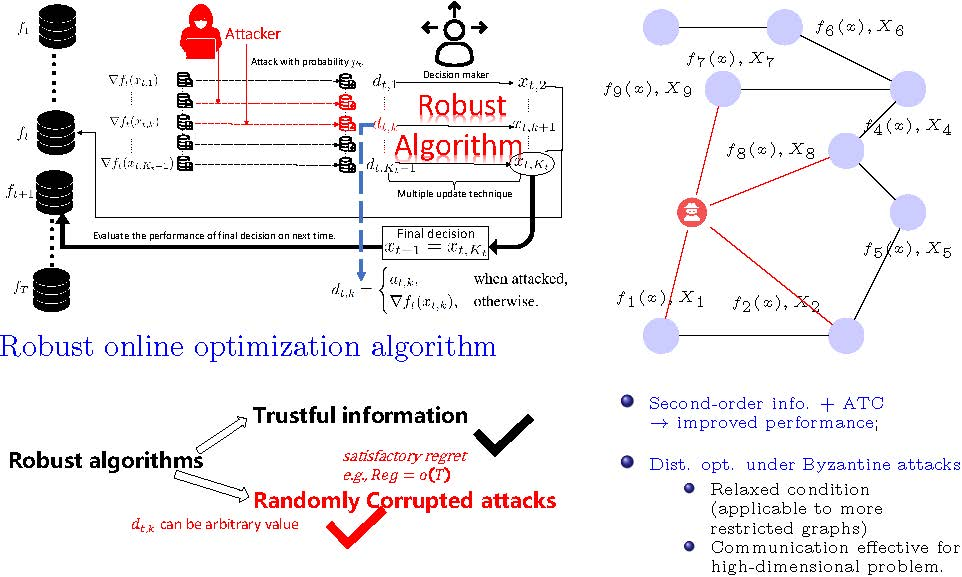
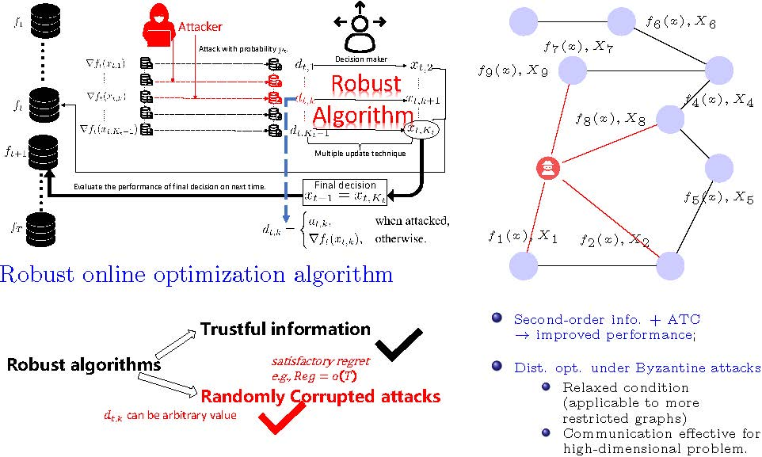

Zhihai Qu: Seeking a Postdoctoral Position
Zhihai Qu, Ph.D. (graduating December 2024)
Tongji University
Address: No. 1239 Siping Road, Shanghai, 200092, P.R. China
Research Interests (not limited to):
Fault-tolerant systems;
Distributed optimization (esp. under Byzantine attacks);
Federated learning;
Online optimization;
Optimization and machine learning related topics (such as reinforcement learning).
Short Introduction:
When agents become unreliable, adversarial agents may take control of the network. I am interested in developing robust algorithms urgently needed for current research, particularly in distributed scenarios, including both fully distributed and federated learning, as well as online and offline environments.Publications
Journal Papers
[5] Z. Qu, X. Li, L. Li, and X. Yi, “Online optimization under randomly corrupted attacks,” IEEE Transactions on Signal Processing, vol. 72, pp. 2160–2172, Apr. 2024, doi: 10.1109/TSP.2024.3392361.
[4] Z. Qu, X. Li, L. Li, and Y. Hong, “Linearly Convergent Second-Order Distributed Optimization Algorithms,” IEEE Transactions on Automatic Control, vol. 69, no. 8, pp. 5431–5438, 2024, doi:10.1109/TAC.2024.3360287.
[3] Z. Qu and L. Jie, “Distributed finite-time-consensus-based heavy-ball algorithm,” Journal of University of Chinese Academy of Sciences, vol. 39, no. 1, Art. no. 127, 2022, doi: 10.7523/j.ucas.2020.0009.
[2] H. Wei, Z. Qu, X. Wu, H. Wang, and J. Lu, “Decentralized approximate newton methods for convex optimization on networked systems,” IEEE Transactions on Control of Network Systems, vol. 8, no. 3, pp. 1489–1500, 2021, doi: 10.1109/TCNS.2021.3070663.
[1] X. Wu, Z. Qu, and J. Lu, “A Second-Order Proximal Algorithm for Consensus Optimization,” IEEE Transactions on Automatic Control, vol. 66, no. 4, pp. 1864–1871, Apr. 2021, doi: 10.1109/TAC.2020.2996205.
Conference Papers
[5] K. He, Z. Qu, and X. Li, “On linear convergence of adaptive sign-based gradient descent,” in 2024 36th Chinese Control and Decision Conference (CCDC), 2024, pp. 449–454. doi: 10.1109/CCDC62350.2024.10588228.
[4] Z. Qu, X. Li, L. Li, and Y. Hong, “Distributed second-order method with diffusion strategy,” in 2023 IEEE International Conference on Systems, Man, and Cybernetics (SMC), 2023, pp. 2022–2027. doi: 10.1109/SMC53992.2023.10394381.
[3] Y. Zhou, J. Lv, Z. Qu, and D. Dai, “How to Support the Decision-Making Process of Community Regeneration in Megacities Based on Evolutionary Game——A Case Study in Shanghai,” in Innovation in Urban and Regional Planning, vol. 242, in Lecture Notes in Civil Engineering, vol. 242. Cham: Springer International Publishing, 2022, pp. 83–93. doi: 10.1007/978-3-030-96985-1_10.
[2] Z. Qu, X. Wu, and J. Lu, “Finite-time-consensus-based methods for distributed optimization,” in 2019 Chinese Control Conference (CCC), 2019, pp. 5764–5769. doi: 10.23919/ChiCC.2019.8865722.
[1] H. Wei, Z. Qu, X. Wu, H. Wang, and J. Lu, “An Approximately-Zero-Gradient-Sum Algorithm for Consensus Optimization,” in 2018 15th International Conference on Control, Automation, Robotics and Vision (ICARCV), Singapore: IEEE, Nov. 2018, pp. 826–830. doi: 10.1109/ICARCV.2018.8581380.
Biography
Zhihai Qu received his B.S. degree in Electronic Information Science and Technology from Hefei University of Technology, Anhui, China, in 2017, and his Master's degree in Communication and Information Systems from the University of Chinese Academy of Sciences, China, under the supervision of Prof. Jie Lu in 2020. After that, he joined Hithink Royal Flush Info. Network Co. as an algorithm developer, focusing on federated learning algorithm development, before leaving in 2021. He is now expected to complete his Ph.D. in Control Science and Engineering at Tongji University, China, under the supervision of Prof. Li Li, with co-supervisors Prof. Xiuxian Li and Prof. Yiguang Hong, in December 2024. His research interests include, but are not limited to, developing algorithms for distributed optimization, federated learning, and online optimization problems, with a particular focus on the security issues therein.
Zhihai is highly self-motivated and capable of working both independently and collaboratively with his colleagues. He enjoys engaging in discussions with people from various fields and excels at asking questions, often leading to new topics for future research. Zhihai has a strong reputation among colleagues from diverse perspectives. However, he is not without flaws; sometimes, he spends too much time on a single area in his quest to satisfy his curiosity. When this happens, a stop button should be pressed.
After working in the company, where he was also an algorithm developer, he believes that he is still passionate about doing more interesting and realistic research. He believes that solely publishing more work may not make the world better, but good work can. Academic research and practical implementation are both important for the world. Currently, he is seeking a postdoctoral position.
 
